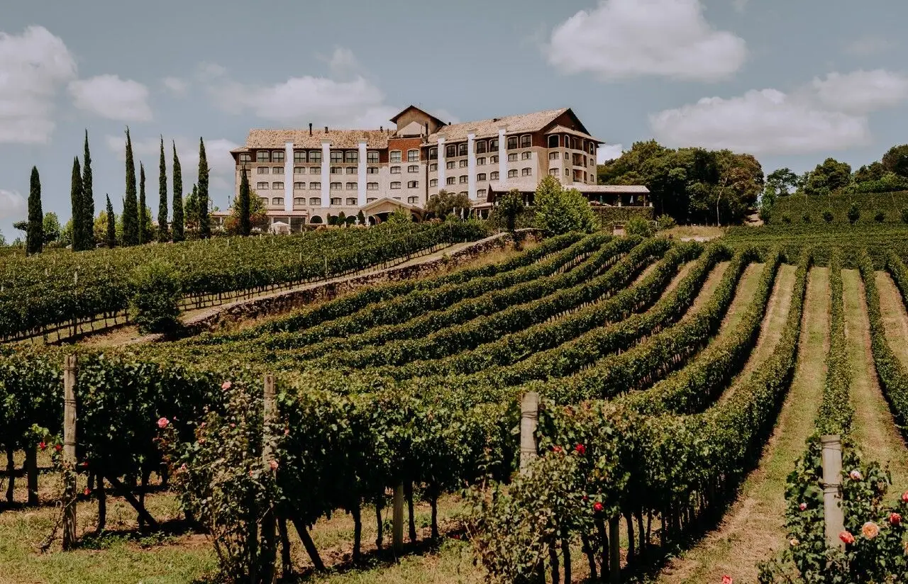
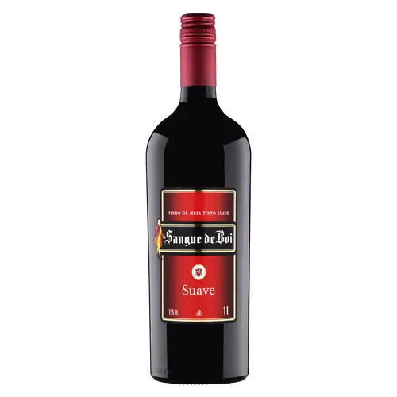

Origem da Marca
A Vinheria Agnello surgiu em São Paulo há mais de 15 anos, idealizada por Giulio Agnello, um imigrante italiano profundamente ligado à cultura do vinho. Nascido em uma região tradicional da Itália, Giulio cresceu em contato direto com vinhedos e pequenas vinícolas familiares, onde aprendeu desde cedo a valorizar não apenas o sabor da bebida, mas também toda a história, técnica e tradição envolvidas em sua produção. Para ele, o vinho sempre representou momentos, experiências e conexões entre pessoas. Ao se mudar para o Brasil, Giulio percebeu uma oportunidade: embora o consumo de vinho estivesse em crescimento, grande parte dos consumidores não possuía conhecimento aprofundado sobre os rótulos, as uvas, as regiões produtoras ou as melhores formas de harmonização. Essa lacuna fez com que ele enxergasse um propósito claro — criar um espaço onde o vinho fosse apresentado de forma acessível, educativa e personalizada. Foi assim que nasceu a Vinheria Agnello, inicialmente como uma pequena loja física, com estrutura simples, mas com uma proposta muito bem definida. Desde o começo, o foco não era apenas vender vinhos, mas proporcionar uma experiência diferenciada ao cliente. Giulio fazia questão de conversar com cada pessoa, entender suas preferências e indicar rótulos de forma quase artesanal, como um verdadeiro consultor. Nos primeiros anos, o crescimento foi gradual, sustentado principalmente pelo boca a boca e pela fidelização dos clientes, que valorizavam o atendimento próximo e o conhecimento transmitido. A vinheria passou a ser vista não apenas como um ponto de venda, mas como um local de descoberta e aprendizado sobre o universo dos vinhos. Com o tempo, a identidade da marca foi se consolidando: tradição, atendimento personalizado e valorização da experiência do cliente. Esses elementos se tornaram a base da Vinheria Agnello e continuam sendo, até hoje, o principal diferencial construído desde a sua origem.
Controle de Qualidade
O controle de qualidade é um dos pilares fundamentais da Vinheria Agnello, refletindo o compromisso da empresa com a excelência e a satisfação de seus clientes. Todos os vinhos comercializados passam por um criterioso processo de curadoria, que começa ainda na escolha dos fornecedores. A vinheria prioriza parcerias com vinícolas reconhecidas no mercado, tanto nacionais quanto internacionais, garantindo a procedência e a confiabilidade dos rótulos. Além da análise de origem e safra, a equipe também considera aspectos como reputação da vinícola, métodos de produção e consistência entre lotes. Sempre que possível, são realizadas degustações prévias, nas quais são avaliadas características sensoriais como aroma, sabor, corpo e equilíbrio do vinho. Esse processo permite selecionar apenas produtos que estejam alinhados com o padrão de qualidade da marca. Outro ponto importante é o cuidado com o armazenamento. A Vinheria Agnello mantém condições adequadas de temperatura, iluminação e umidade, evitando alterações que possam comprometer as características originais dos vinhos. O controle de estoque também é rigoroso, garantindo a correta rotatividade dos produtos e evitando a comercialização de garrafas fora de seu melhor período de consumo. Por fim, o controle de qualidade se estende até o atendimento ao cliente. A equipe é treinada para orientar corretamente sobre conservação após a compra, formas de consumo e harmonização, assegurando que toda a experiência, do momento da escolha até o consumo final, esteja à altura do padrão de excelência da vinheria.

Seleção de Vinhos
A loja conta com uma ampla variedade de vinhos nacionais e importados, atendendo desde iniciantes até apreciadores mais exigentes. O catálogo é constantemente atualizado para oferecer novas experiências e descobertas.
Experiência do Cliente
A experiência do cliente é um dos principais diferenciais da Vinheria Agnello, sendo tratada como parte essencial do negócio. Mais do que comercializar vinhos, a empresa busca criar momentos memoráveis, transformando cada visita em uma oportunidade de descoberta e aprendizado. Desde a entrada na loja, o cliente é recebido de forma acolhedora, com um atendimento próximo e personalizado, onde suas preferências, ocasiões de consumo e até seu nível de conhecimento sobre vinhos são levados em consideração. A equipe de vendedores atua quase como consultores, guiando o cliente na escolha do rótulo ideal, explicando características das uvas, regiões produtoras e sugerindo harmonizações de forma simples e acessível. Essa abordagem faz com que até clientes iniciantes se sintam confiantes para explorar novos sabores, enquanto os mais experientes encontram recomendações mais específicas e refinadas. Além do atendimento no dia a dia, a Vinheria Agnello investe na realização de eventos e degustações, criando um ambiente de interação e aprendizado. Nessas ocasiões, os clientes têm a oportunidade de experimentar diferentes rótulos, conhecer histórias por trás das vinícolas e trocar experiências com outros apreciadores. Esses eventos reforçam o vínculo emocional com a marca, tornando a vinheria não apenas um ponto de venda, mas também um espaço de convivência e cultura. Outro aspecto importante é a preocupação com o pós-venda. A equipe se mantém disponível para esclarecer dúvidas, oferecer novas recomendações e acompanhar a evolução do gosto dos clientes ao longo do tempo. Dessa forma, a experiência proporcionada pela Vinheria Agnello vai além da compra, consolidando um relacionamento duradouro baseado em confiança, proximidade e valorização de cada cliente.
Nossos Vinhos Mais Vendidos
- Sangue de Boi
- Cabernet Sauvignon Reserva
- Merlot Premium
- Malbec Argentino
- Chardonnay Branco Seco
- Espumante Brut Rosé
